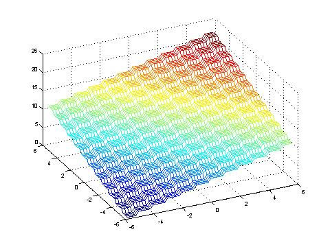
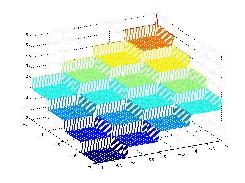

The idea of this function is the implementation of a flat plateau (slope 0)in an underlying continuous function.Its harder for optimization algortihms to find optimums because minor changes of the object variables don't affect the fitness. Therefore no conclusions about the search direction can be made.

The step function is symmetric considering the underlying function (here: f(x,y) = f(y,x)), but between the bulk constant plateau-areas not continuously differentiable.
Its minimum-area is located in the intervalls: f(x)=f([-5.12,-5), ... , [-5.12,-5))=0.

Thomas Baeck, Evolutionary Algorithms in Theory and Practice. Oxford University Press, 1996.
Darrell Whitley, Soraya Rana, John Dzubera, Keith E. Mathias. Evaluating Evolutionary Algorithms. Artificial Intelligence, 85(1-2):245-276. 1996.
Eberhard Schoeneburg, Frank Heinzmann, Sven Feddersen. Genetische Algorithmen und Evolutionstrategien - Eine Einfuehrung in Theorie und Praxis der simulierten Evolution. Addison-Wesley, 1994.